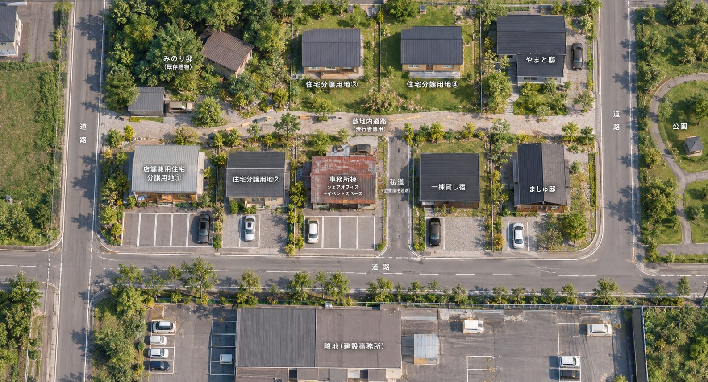
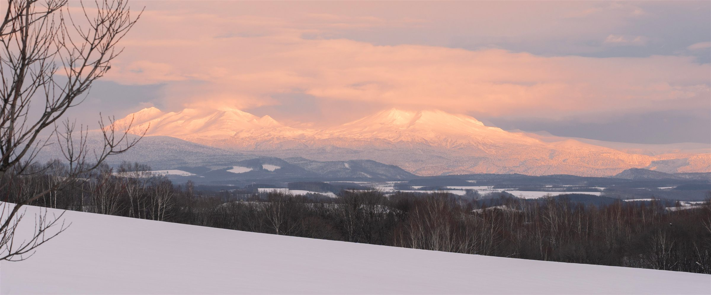
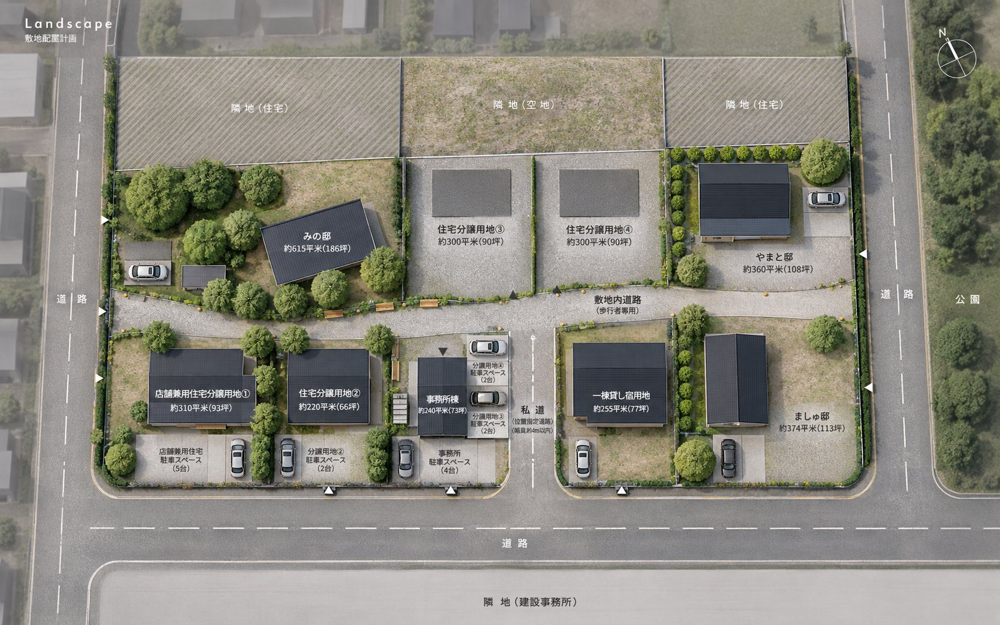
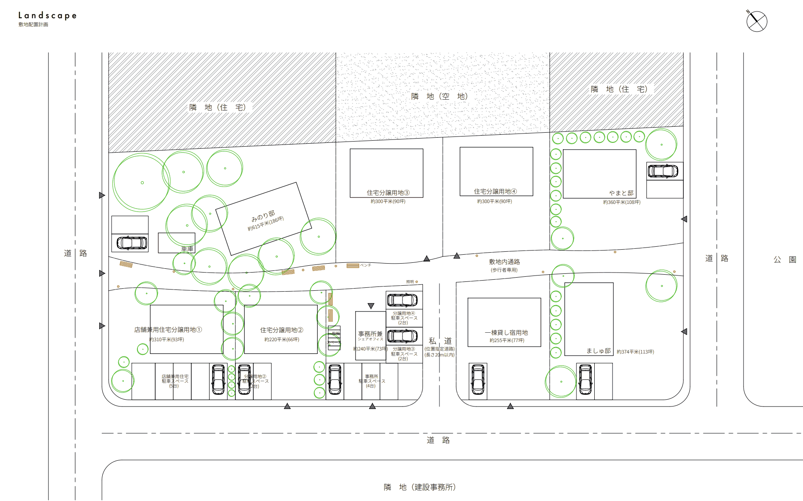

写真 10月撮影予定
ミュージックバー
→ シェアオフィスとイベントスペースに
かつてバンドが演奏していた店です。ロフトのある建物を改修して、昼は働く場所、夜は音楽や交流の場所として開き直します。
Higashikawa, Hokkaido
町の中心部で、新しい試み ｜ 東川ライフスタイルヴィレッジ計画

写真の町、東川。旭岳の麓で、地下水とともに暮らすこの町には、過密でも過疎でもない「適疎」という暮らし方に惹かれて、全国からいろんな人が集まってきます。
そのまんなか、公園と木立に囲まれた約1,000坪の土地で、新しい暮らしの場をつくろうとしています。
住む人、働く人、泊まりに来る人、ふらりと立ち寄る人。いろんな背景を持つ人がここで出会い、混ざり合う。そんな場所を、共感してくれる人たちと一緒に育てていきたいと思っています。

東川という町
北海道のほぼまんなか、大雪山国立公園の麓。
人口約8,000人、上水道のない町。
北海道でただひとつ上水道がなく、町の人はみな、大雪山からの地下水で暮らしています。
1985年に「写真の町」を宣言。高校生の写真甲子園や、国際写真フェスティバルが毎年開かれます。
町の東部は大雪山国立公園。北海道最高峰の旭岳（2,291m）に、春夏は登山、冬はパウダースノーを求めて人が訪れます。
蛇口をひねれば、大雪山の雪解け水がしみこんだ地下水。その水で育つお米や野菜も、この町の誇りです。
旭川家具の多くがこの町でつくられています。町で生まれた子どもには、手づくりの椅子が贈られます。
全国で初めての公立日本語学校があり、世界中から学生が集まります。町を歩けば、いろんな言葉が聞こえます。
隈研吾建築都市設計事務所が設計したサテライトオフィス「KAGUの家」や、隈研吾監修の温浴施設「キトウシの森きとろん」が町にあります。
Access
旭川空港から車で13分
旭川駅から車で22分
町には、移住や住まいに関する支援制度・助成金もあります。詳しくは東川町の窓口にお問い合わせください。
町のまんなかに、約1,000坪
隣は公園、敷地には大きな木立。
町の中心部で、これだけの広さがまとまって残っている場所は多くありません。
Life｜生活
Public｜公共施設
Scenery｜景観
残っている2棟を、引き継ぐ
更地から始めるのではなく、
ここにあるものを直すところから始めます。
→ シェアオフィスとイベントスペースに
かつてバンドが演奏していた店です。ロフトのある建物を改修して、昼は働く場所、夜は音楽や交流の場所として開き直します。
→ 改修して、再び暮らしの場に
長く住まわれてきた家を直して、もう一度住まいとして使います。土地の持ち主であるみのりが、ここで暮らします。
私たち
海の向こう側から、南の島から、地元から。
海の向こう側から
東川町立日本語学校で学び、いまは美瑛で宿を営みながら、東京で不動産の仕事をしています。東川に迎えてもらった人が、今度は迎える側になります。
南の島から
沖縄出身。美瑛で農作業の代行をしています。役所との相談から現地の手配まで、現場のことはやまとが動かします。
地元から
この土地で暮らし続けながら、友人たちと一緒に住める場所にしたいと考えています。
Makers｜つくり手
Supporters｜応援してくれる人
ここでつくるもの


配置計画図をもとに描いた鳥瞰図です。敷地配置計画図（スケール1/300、敷地面積 約3,300㎡）。 いずれも計画段階のもので、今後変わることがあります。
区画を買って家を建てる。お店を開きながら暮らすこともできる
席や部屋を借りる
泊まって、ここでの暮らしを試す
ふらりと歩いて、お店に立ち寄り、木陰でひと休みする
イベントに来る、イベントを開く
クラウドファンディングで、通りづくりとミュージックバーの再生を支える
大切にしたいこと
いまある木立は、みんなの財産として残します。
敷地の中だけで閉じず、町の人も通り抜けられる場所にします。
つくる人と住む人を分けず、一緒に考えて、一緒につくります。
除雪や雪の置き場は、住む人で分担します。
敷地内の通りは、車より歩く人を優先します。
まだ決まっていないこと
決まってから募集するのではなく、
決める前から一緒に考えてくれる人を探しています。
これから
ご連絡
はじめまして、から。
住んでみたい、お店をやってみたい、ちょっと気になる。どんなきっかけでも大丈夫です。進み具合をお知らせしたり、見学会のご案内をお送りします。
ありがとうございます。
近いうちに、こちらからご連絡します。
この計画をつくっているチーム
東川ライフスタイルヴィレッジ計画は、美瑛・東川町の地域編集チーム Ubaku が企画・運営しています。
Ubaku のサイトへ →